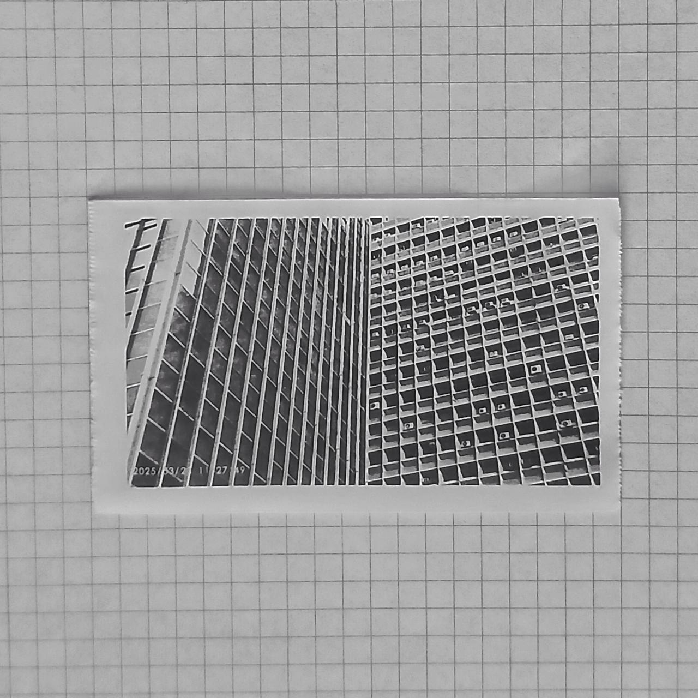
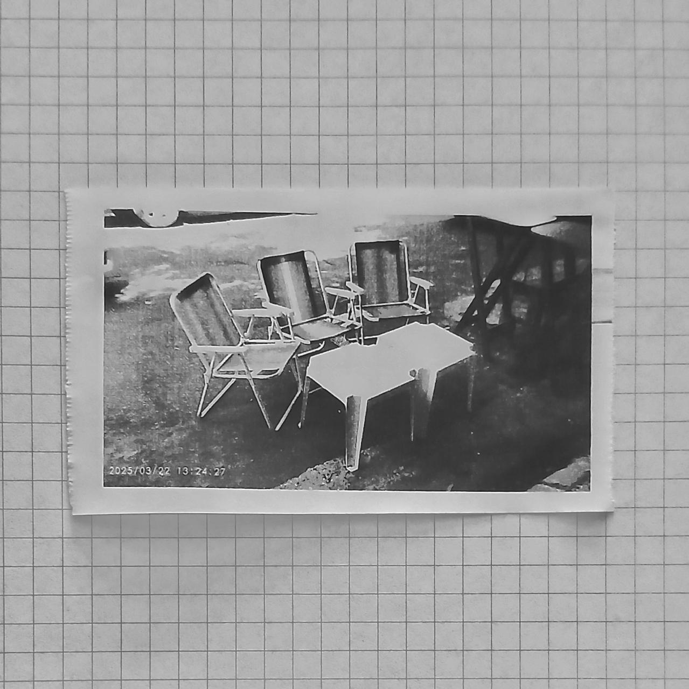
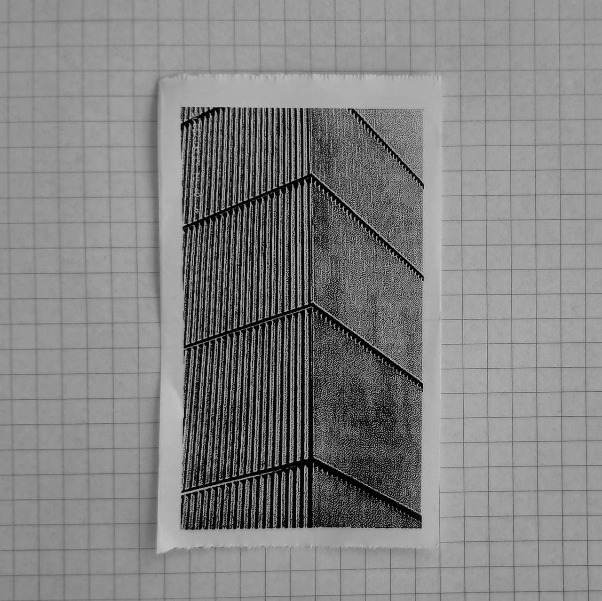
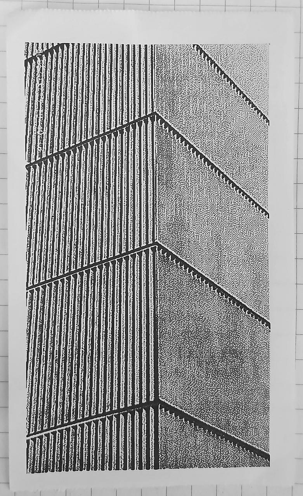
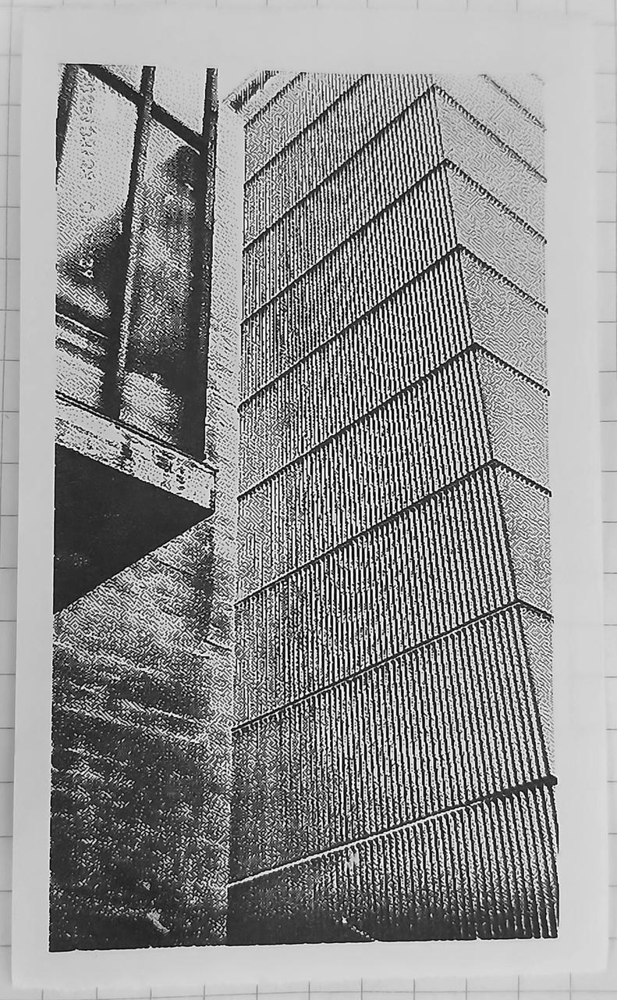
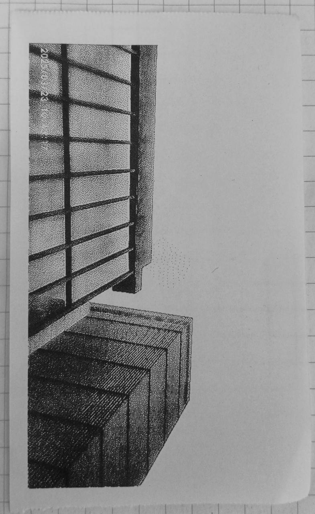
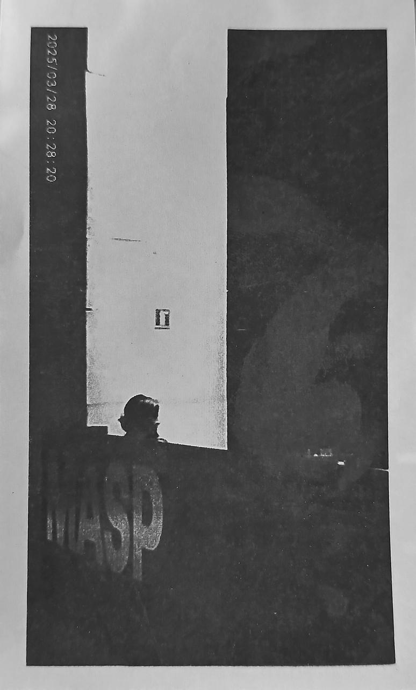

tiny thermal cam goes to masp
last year, masp's new annex opened to the public. i had the opportunity to visit at opening week. a few weeks before that, i bought a tiny thermal camera that prints on receipt paper.
path

using the tiny camera is lots of fun. i get to print and see the image as soon as they are taken.

the paper is also cheap (a lot cheaper than instax). i could even reuse regular print paper, which is something i do actually want to try out in the future.

some little chairs i found on the way.
anexo
the annex is out of place and discrete at the same time.


it does not draw much attention to itself.

while contrasting the original building by bobardi.

the annex was actually built on top of a pre-existing building. they reused some of the foundations and original structure.

Comments